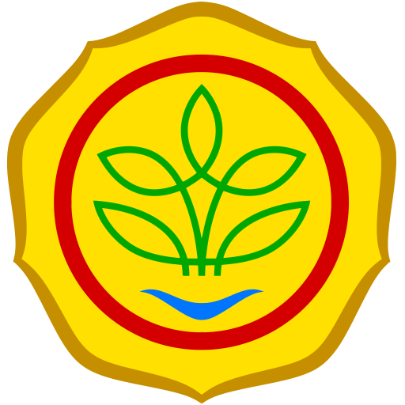

Badan Usaha Milik Negara

Kementerian Pertanian Republik Indonesia
Badan Pangan Nasional
Badan Usaha Milik Negara
Kementerian Pertanian Republik Indonesia
Badan Pangan Nasional
Menteri Pertanian Andi Amran Sulaiman, pada kunjungan di Merauke, Papua Selatan, menegaskan tekad pemerintah untuk menjadikan Merauke sebagai lumbung pangan global. Dia menyatakan optimisme bahwa Merauke akan menjadi sumber utama beras nasional dalam dua tahun ke depan. Evaluasi dilakukan terhadap progres optimalisasi lahan rawa seluas 40 ribu hektar, dengan lebih dari separuh sudah selesai dibangun. Pembangunan jalan sepanjang 135,5 km juga tengah berlangsung untuk mendukung program cetak sawah 1 juta hektar. Menteri Amran memantau proyek ini secara langsung dan berkomitmen untuk terus mengawasinya. Semangat membangun Merauke sebagai lumbung pangan dunia menjadi fokus dalam upaya modernisasi pertanian di daerah tersebut.
Serangan hama wereng terhadap tanaman padi di Tasikmalaya telah menimbulkan kekhawatiran, terutama bagi para petani. Koordinator penyuluh pertanian BPP Kecamatan Cibeureum, Asep Ridwan, menyampaikan bahwa serangan hama wereng jenis batang coklat (WBC) kini sedang merebak dan mengejutkan petani. Hal ini diduga disebabkan oleh perubahan iklim, penggunaan benih kurang berkualitas, dan gangguan ekosistem yang mengurangi populasi predator wereng. Untuk mengatasi masalah ini, saat ini dilakukan penyemprotan insektisida baik oleh pemerintah maupun petani sendiri. Para penyuluh pertanian juga memberikan bantuan insektisida kepada petani untuk membantu mengatasi serangan hama wereng ini. Meskipun jumlah lahan yang terdampak mencapai 80 hektar, petugas terus melakukan upaya pengendalian dan memberikan penyuluhan untuk mencegah serangan hama tersebut terjadi di musim panen selanjutnya.
Pengamat pertanian dan Kepala Dinas Pangan Sumatera Barat, Syaiful Bahri, menyoroti pentingnya memaksimalkan anggaran ketahanan pangan Rp 124,4 triliun dalam RAPBN 2025 untuk meningkatkan produktivitas pertanian. Dikatakan bahwa prioritas utama harus diberikan pada ketahanan pangan, baik melalui impor maupun produksi dalam negeri. Syaiful menekankan perlunya pemerintah fokus pada peningkatan produktivitas pertanian, terutama dalam produksi padi, untuk menghindari defisit beras. Keseriusan pemerintah dalam mencapai ketahanan pangan dinilai dari penanganan berbagai permasalahan pertanian, seperti pupuk subsidi, kualitas bibit, dan infrastruktur pertanian.
Pertimbangkan untuk diversifikasi produk yang ditanam untuk membuka peluang pasar baru. Manfaatkan platform digital dan media sosial untuk mempromosikan dan menjual produk secara langsung kepada konsumen.
cobalah teknik rotasi tanaman untuk menjaga kesehatan tanah dan mengurangi risiko penyakit tanaman. Gunakan kompos organik untuk meningkatkan kesuburan tanah dan struktur tanah.
Pertimbangkan menggunakan teknologi seperti sensor tanah atau aplikasi mobile untuk memantau kesehatan tanaman dan kondisi tanah. Pastikan semua alat dan mesin pertanian dalam kondisi baik dan rutin diperiksa serta dirawat.
Perhatikan kesehatan dan keselamatan kerja dengan menggunakan alat pelindung dan teknik kerja yang aman. Usahakan untuk menjaga keseimbangan antara pekerja dan kehidupan pribadi agar tetap sehat dan produktif.
Ikuti pelatihan dan workshop tentang teknik pertanian terbaru, manajemen bisnis pertanian, dan pemasaran produk. Bergabunglah dengan kelompok petani dan asosiasi untuk berbagai pengalaman dan informasi.
Lakukan pemantauan rutin terhadap tanaman untuk mendeteksi hama dan penyakit sejak dini. Gunakan metode pengendalian hama yang ramah lingkungan, seperti predator alami dan pestisida organik.
 Muhammad Sumbul
Muhammad Sumbul